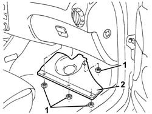
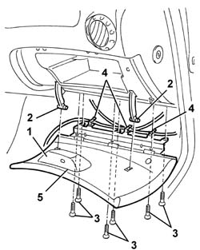

7040A14 FLAP OF GLOVE COMPARTMENT TRIM ELEMENT (ONE) - ARRANGE
- Path
- Procedures > 70 FITTINGS > 7040 BODYSHELL INTERIOR TRIMS AND FITTINGS > 7040A PASSENGER COMPARTMENT TRIM > 7040A14 FLAP OF GLOVE COMPARTMENT TRIM ELEMENT (ONE) - ARRANGE
- Kind
- repair procedure (removal / refitting; the operation number is the code)
- Applies to
- all engines; all production periods
- Interactive page
- https://sloeber94.github.io/elrnDB-aGt/en/#/125001854
Applies to: all engines; all production periods
 Removing
Removing
 Refitting
Refitting1. Working under the right side of the dashboard, undo the nuts fixing the bulkhead.
2. Remove the bulkhead.

Applies to: all engines; all production periods
1. Open the dashboard compartment flap.
2. Disengage the ends of the rods.
3. Undo the bolts fixing the flap.
4. Release the wiring from the flap.
5. Recover the flap.

Applies to: all engines; all production periods
Refitting
RemovingCheck that the flap is undamaged.
Secure the wiring to the flap.
Position the flap.
Tighten the bolts fixing the flap.
Engage the ends of the rods on the flap.
Position the bulkhead and fix it using the nuts.
Test the operation of the flap.
Topics that link to this page (7)
- S61 DASHBOARD CREAKING
- 5040C64 A/C MANUAL CONTROL SWITCH (ONE) - R+R
- 5040D90 AIR CONDITIONER SYSTEM WIRING BUNDLE - R R
- 5505C28 INTERGRATED ENGINE BAY AND ABS SYSTEM WIRING - R R
- 5505C34 INTERGRATED INSTRUMENT UNDER FACIA FRONT AIR BAG WIRING - R R
- 7040A09 PASSENGER AIR BAG COMPARTMENT COVER - R R
- 7040A97 FACIA TRIM SUPPORT BEAM - R R